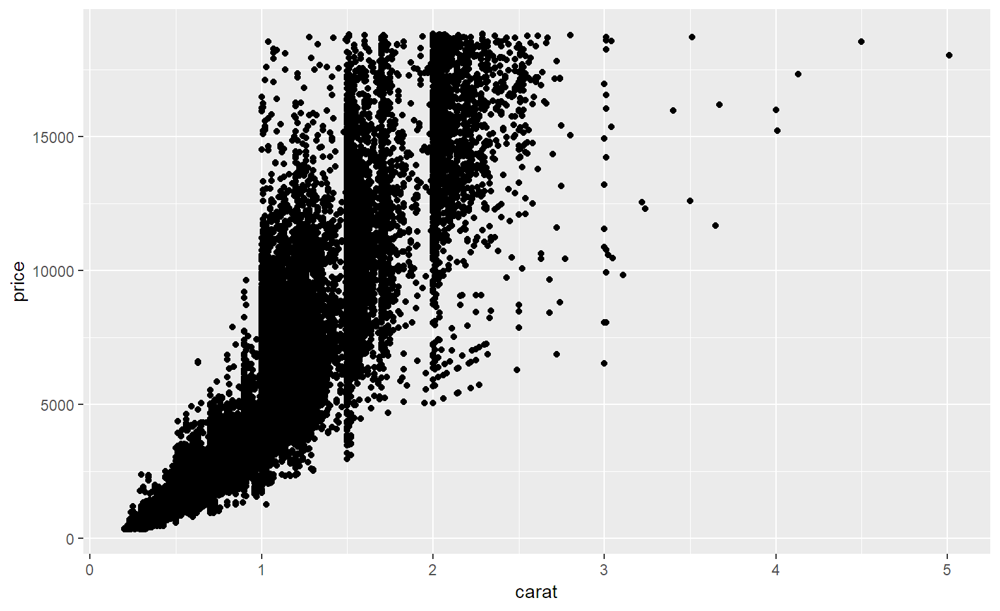

А. М. Ярославцев
for (i in от:до) { действия}
## [1] 3 4 5 6 7 8 9 10 11 12l = list(1:10,-2:10,-9:-3,400:1000, 120:190)
mn=c()
for (i in 1:length(l))
{
mn=c(mn,mean(l[[i]]))
}
mn## [1] 5.5 4.0 -6.0 700.0 155.0Попробуйте запустить алгоритм для разных а, например, 3, 10, 100, 100000
a=100000
x=runif(a,-1,1)
y=runif(a,-1,1)
Pi=0 ; Nr=0 ; Ns=0
for (i in 1:a)
{
if ((x[i]^2+y[i]^2)>1)
{
Ns=Ns+1
}
else
{
Nr=Nr+1
}
}
Pi=4*Nr/(Ns+Nr); Pi## [1] 3.13804Нарисуйте графики для 100, 1000, 3000 и 10000 итераций
pis=c()
for (i in seq(10,3000,10))
{ x=runif(i,-1,1)
y=runif(i,-1,1)
z=table(x^2+y^2<=1)
my_p=4*z[2]/i
pis=c(pis,my_p)
}
mean(pis)## [1] 3.147457## Sepal.Length Sepal.Width Petal.Length Petal.Width Species
## 1 5.1 3.5 1.4 0.2 setosa
## 2 4.9 3.0 1.4 0.2 setosa
## 3 4.7 3.2 1.3 0.2 setosa
## 4 4.6 3.1 1.5 0.2 setosa
## 5 5.0 3.6 1.4 0.2 setosa
## 6 5.4 3.9 1.7 0.4 setosa## [[1]]
## [,1] [,2]
## [1,] 5.1 3.5
## [2,] 871.4 455.1
##
## [[2]]
## [,1] [,2]
## [1,] 4.9 3.0
## [2,] 871.6 455.6
##
## [[3]]
## [,1] [,2]
## [1,] 4.7 3.2
## [2,] 871.8 455.4Функции группы apply() позволяют применить какую-либо функцию к массивам большой размерности:
## Sepal.Length Sepal.Width Petal.Length Petal.Width
## 876.5 458.6 563.7 179.9## setosa versicolor virginica
## 250.3 296.8 329.4
## $xlog
## [1] FALSE
##
## $ylog
## [1] FALSE
##
## $adj
## [1] 0.5
##
## $ann
## [1] TRUE
##
## $ask
## [1] FALSE
##
## $bg
## [1] "white"
##
## $bty
## [1] "o"
##
## $cex
## [1] 1
##
## $cex.axis
## [1] 1
##
## $cex.lab
## [1] 1
##
## $cex.main
## [1] 1.2
##
## $cex.sub
## [1] 1
##
## $cin
## [1] 0.15 0.20
##
## $col
## [1] "black"
##
## $col.axis
## [1] "black"
##
## $col.lab
## [1] "black"
##
## $col.main
## [1] "black"
##
## $col.sub
## [1] "black"
##
## $cra
## [1] 28.8 38.4
##
## $crt
## [1] 0
##
## $csi
## [1] 0.2
##
## $cxy
## [1] 0.02218935 0.06544861
##
## $din
## [1] 7.999999 4.895833
##
## $err
## [1] 0
##
## $family
## [1] ""
##
## $fg
## [1] "black"
##
## $fig
## [1] 0 1 0 1
##
## $fin
## [1] 7.999999 4.895833
##
## $font
## [1] 1
##
## $font.axis
## [1] 1
##
## $font.lab
## [1] 1
##
## $font.main
## [1] 2
##
## $font.sub
## [1] 1
##
## $lab
## [1] 5 5 7
##
## $las
## [1] 0
##
## $lend
## [1] "round"
##
## $lheight
## [1] 1
##
## $ljoin
## [1] "round"
##
## $lmitre
## [1] 10
##
## $lty
## [1] "solid"
##
## $lwd
## [1] 1
##
## $mai
## [1] 1.02 0.82 0.82 0.42
##
## $mar
## [1] 5.1 4.1 4.1 2.1
##
## $mex
## [1] 1
##
## $mfcol
## [1] 1 1
##
## $mfg
## [1] 1 1 1 1
##
## $mfrow
## [1] 1 1
##
## $mgp
## [1] 3 1 0
##
## $mkh
## [1] 0.001
##
## $new
## [1] FALSE
##
## $oma
## [1] 0 0 0 0
##
## $omd
## [1] 0 1 0 1
##
## $omi
## [1] 0 0 0 0
##
## $page
## [1] TRUE
##
## $pch
## [1] 1
##
## $pin
## [1] 6.759999 3.055833
##
## $plt
## [1] 0.1025000 0.9475000 0.2083404 0.8325106
##
## $ps
## [1] 12
##
## $pty
## [1] "m"
##
## $smo
## [1] 1
##
## $srt
## [1] 0
##
## $tck
## [1] NA
##
## $tcl
## [1] -0.5
##
## $usr
## [1] 0 1 0 1
##
## $xaxp
## [1] 0 1 5
##
## $xaxs
## [1] "r"
##
## $xaxt
## [1] "s"
##
## $xpd
## [1] FALSE
##
## $yaxp
## [1] 0 1 5
##
## $yaxs
## [1] "r"
##
## $yaxt
## [1] "s"
##
## $ylbias
## [1] 0.2

Cодержимое данных mtcars посмотрим с помощью функции str()
## 'data.frame': 32 obs. of 11 variables:
## $ mpg : num 21 21 22.8 21.4 18.7 18.1 14.3 24.4 22.8 19.2 ...
## $ cyl : num 6 6 4 6 8 6 8 4 4 6 ...
## $ disp: num 160 160 108 258 360 ...
## $ hp : num 110 110 93 110 175 105 245 62 95 123 ...
## $ drat: num 3.9 3.9 3.85 3.08 3.15 2.76 3.21 3.69 3.92 3.92 ...
## $ wt : num 2.62 2.88 2.32 3.21 3.44 ...
## $ qsec: num 16.5 17 18.6 19.4 17 ...
## $ vs : num 0 0 1 1 0 1 0 1 1 1 ...
## $ am : num 1 1 1 0 0 0 0 0 0 0 ...
## $ gear: num 4 4 4 3 3 3 3 4 4 4 ...
## $ carb: num 4 4 1 1 2 1 4 2 2 4 ...# Добавим geom\_point() и geom\_smooth() через символ +
ggplot(diamonds, aes(x = carat, y = price)) + geom_point() + geom_smooth()## `geom_smooth()` using method = 'gam' and formula 'y ~ s(x, bs = "cs")'
## `geom_smooth()` using method = 'gam' and formula 'y ~ s(x, bs = "cs")'## `geom_smooth()` using method = 'gam' and formula 'y ~ s(x, bs = "cs")'# Зададим правильное значение col из aes()
ggplot(diamonds, aes(x = carat, y = price, col=clarity)) +
geom_smooth()## `geom_smooth()` using method = 'gam' and formula 'y ~ s(x, bs = "cs")'# Создадим объекты, содержащие данные и слои aes: dia_plot
dia_plot = ggplot(diamonds, aes(x = carat, y = price))
# Добавим слой geom с точками geom_point()
dia_plot + geom_point()